Local Meta ads
Reach nearby people on Facebook and Instagram.
A custom audit / Remarkable Home Remodeling
We’re Vessel Archive, a local Sacramento marketing team.
A short plan for Remarkable Home Remodeling.
Reach nearby people on Facebook and Instagram.
Real videos, photos and clear messages.
Get found through your Google Business Profile, site and blogs.
What you do well
You already have a strong starting point: finished spaces, a clear remodeling offer and homeowners willing to recommend you.
Make the details consistent, then make the next step easier.
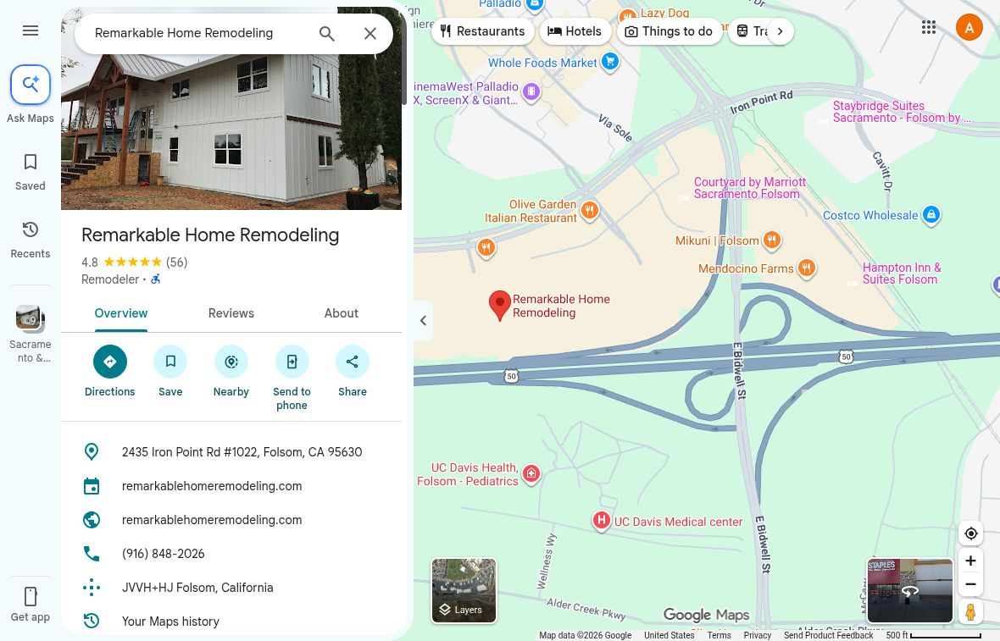
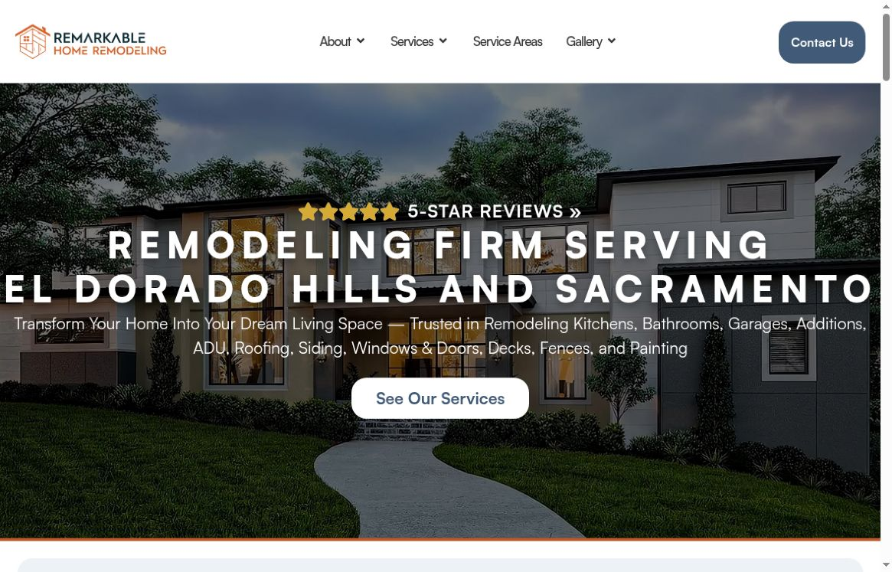
What we found / 1 of 3
Your site and Google use Folsom and 916-848-2026. BBB and Best of Orangevale use 5911 Beech Ave, Orangevale and 916-947-7990. Confirm which details should remain public.
Observed differences, not failed calls. Google and the website agree.
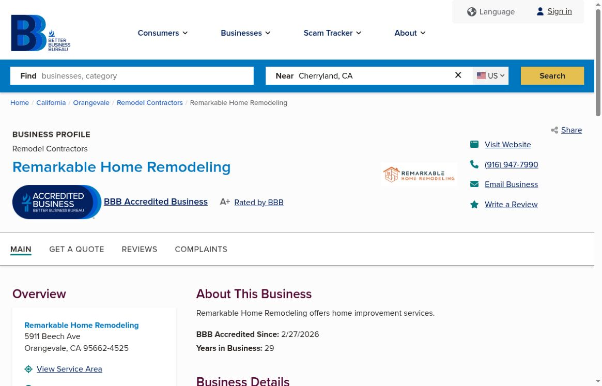
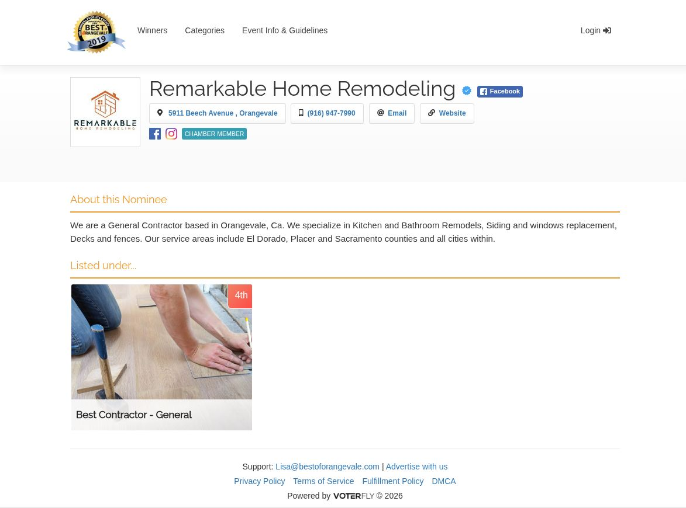
The Roseville kitchen article asks readers to call 916-947-7990. Your contact page says 916-848-2026. Align the article’s next step with the route your team wants homeowners to use.
Live article and contact page compared. Neither number was called.
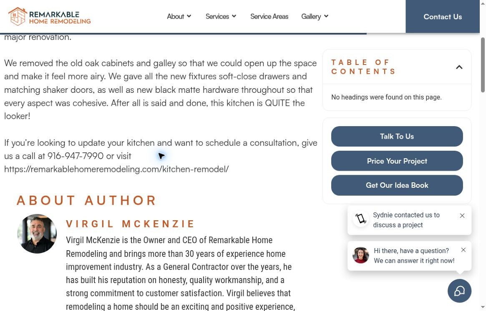
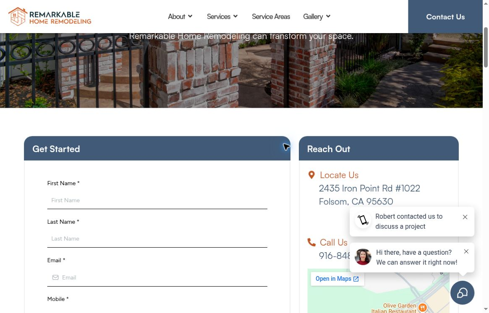
What we found / 2 of 3
PageSpeed measured 4.5-second largest contentful paint on mobile, with a performance score of 84. Desktop scored 99 with 0.9-second LCP. Prioritize the phone experience and retest.
One Nov 11 lab run. Mobile used simulated Slow 4G; not every visitor’s experience.
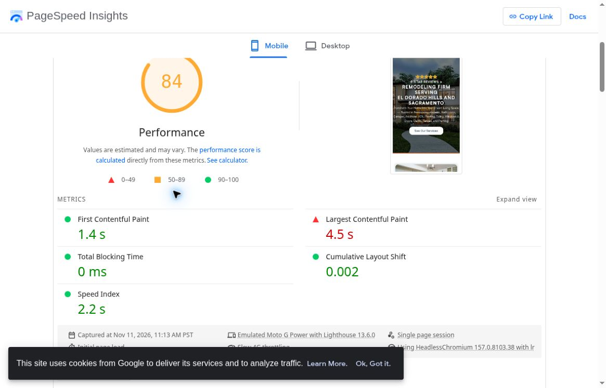
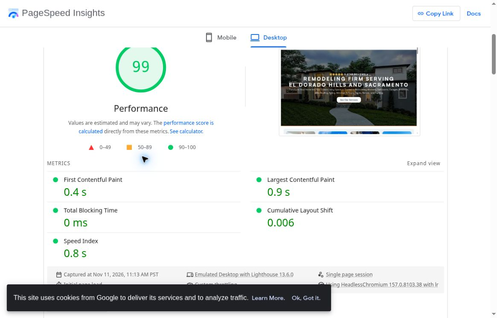
The public profile offers “Add hours” instead of displaying a schedule. Add the right call or office hours so homeowners know when to expect someone.
Observed on the public profile. Confirm the schedule and location type before updating.
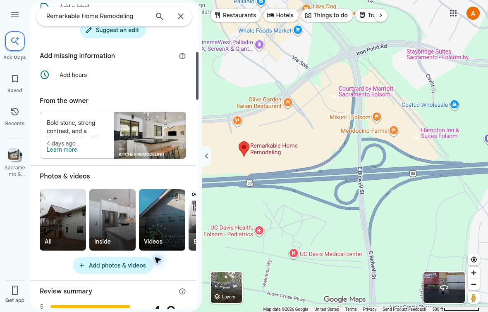
What we found / 3 of 3
The contact form marks nine fields as required, including city, project timing and question category. Test collecting only the essentials first, then ask the rest in follow-up.
Field labels observed; form not submitted. Abandonment and lead quality were not measured.
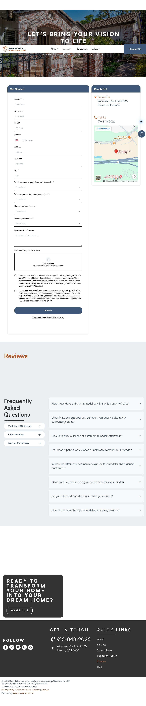
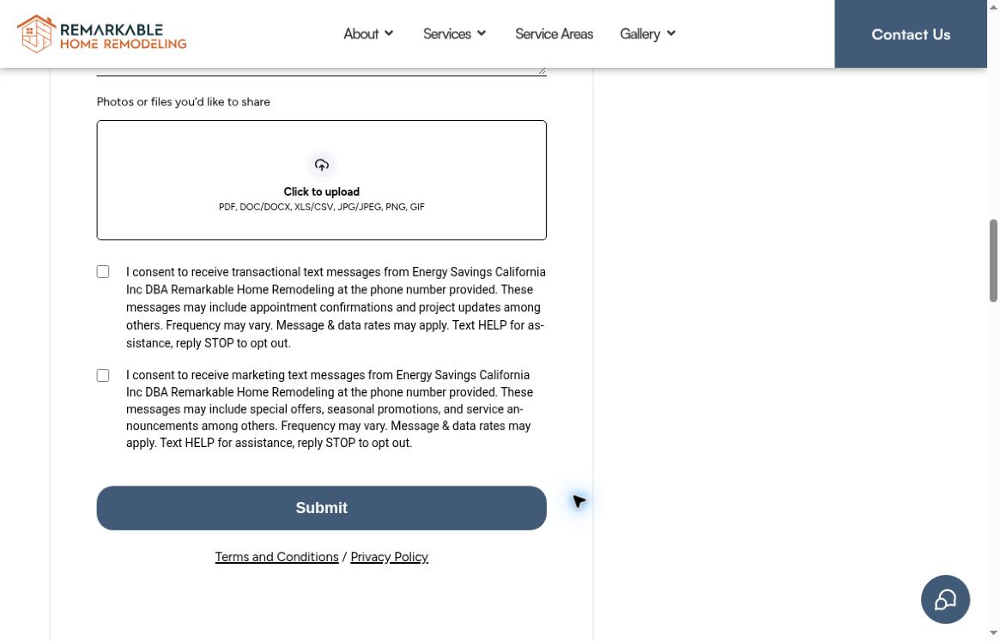
The Sacramento kitchen case names the location and project type, then shows photos. Add the homeowner’s goal, the work completed and the main design decisions.
Opportunity on this specific portfolio page. Other articles already include project narratives.
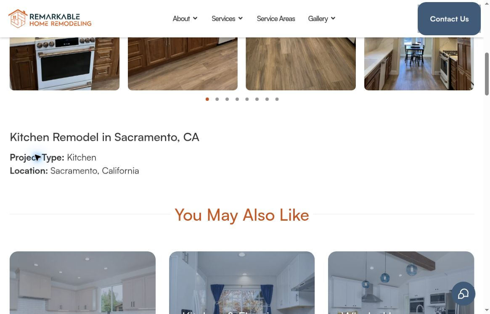
How we would help / 1 of 2
Confirm your current address, main phone and any tracking numbers. Update the named listings and article, then check the call and contact links together.
Improve the mobile hero’s loading, retest under the same conditions and add accurate Google hours. Keep the route to a project conversation clear.
How we would help / 2 of 2
Test a shorter first-contact form against the current one. State when the team will reply, route each inquiry to an owner and track qualified conversations, not just submissions.
Build case stories and short videos from approved project footage. Explain the brief, choices and result, then connect each story to a relevant consultation page.
Ideas for your next shoot
Walk through a real kitchen before and after. Explain the layout problem, one design choice and how the finished room works.
Show how the team decides whether to keep a layout, move a wall or replace cabinetry. Use one approved project as the example.
Let a team member explain what homeowners should bring, what happens after an inquiry and how the next step is agreed.
A proposed starting plan / 1 of 2
Confirm contact details, improve the inquiry route and speed up the mobile hero. Script and shoot approved project stories, then prepare local ad tests around the services you want to grow.
Compare which videos and landing pages bring qualified calls and project conversations. Review lead follow-up with your team and refine the message, form and audience.
Proposed timing depends on agreed scope, access and team approvals.
A proposed starting plan / 2 of 2
Create more stories around the work and messages that produce useful inquiries. Refresh approved ads, improve the site and keep business details current across priority listings.
Then repeat each month: shoot, launch, learn and improve.
Proposed timing depends on agreed scope, access and team approvals.
From one local team to another

Whether we work together or not, we hope this helps. We love seeing Sacramento-area businesses do well. If you’d like, we can talk through the next step.